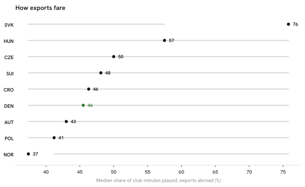

Summary · Question 7 of 14
Share of club minutes played by exports in the top-9 leagues, by country of origin, 2025/26
Danish exports played a median 46 % of their club's minutes (90 % bootstrap interval 41–55 %, n = 75), 6th of 9 by the median; 8 of the other countries’ intervals overlap it.

Country-by-country figures
How we know
As an analytics question In numbers: median share of a club's 2025/26 minutes kept by players abroad, by country of origin.
What we did We worked out what share of each club's playing time the player actually got, took the median over each country's exports and resampled the players to put an interval on that median.
Sources Median share of club minutes (player minutes ÷ club matches × 90) for players with the country's nationality at a top-9 club, one row per player; 90 % percentile-bootstrap interval, 2 000 resamples of players, seed 42.
What this means
Once in a top-9 league, Danish exports play a median 46 % of their club’s minutes. Several countries have few exports, so the intervals are wide and the ranking of medians is loose. The measure describes playing time, not performance, and says nothing about the players who did not move.
What this does not show
Performance per minute, the strength of a club within its league beyond a goals-scored proxy, and exports outside the nine leagues.
Data snapshot: FBref tables fetched 14 September 2026, snapshot commit ef7dbd4 · code: src/pathways.py · status: exploratory, not pre-registered · all limitations